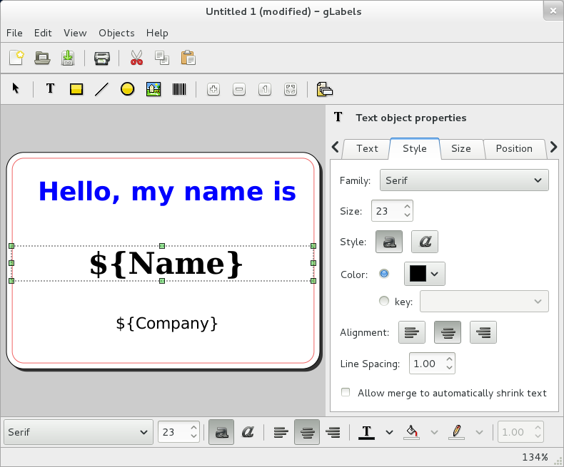

gLabels User Manual¶
The gLabels application is a lightweight program for creating labels and business cards for the GNOME desktop environment. It is designed to work with various laser/ink-jet peel-off label and business card sheets that you’ll find at most office supply stores.
gLabels can be used to design address labels, name tags, price tags, cd/dvd labels, or just about anything else that is organized in a regular pattern on a sheet of paper. Labels (or cards) can contain text, images, lines, shapes, and barcodes. gLabels also includes a document-merge feature which lets you print a unique label for each record from an external data source, such as a CSV file.

gLabels main window¶
- Basic Usage
- Starting gLabels
- User Interface Overview
- Creating a New gLabels Project
- Saving Your gLabels Project
- Opening an Existing gLabels Project
- Editing a Label or Card Design
- Changing Basic Project Properties
- Performing a Document Merge
- Creating User-Defined Variables
- Skipping blank address lines
- Printing Your gLabels Project
- Tutorials
- Advanced Usage
- Reference